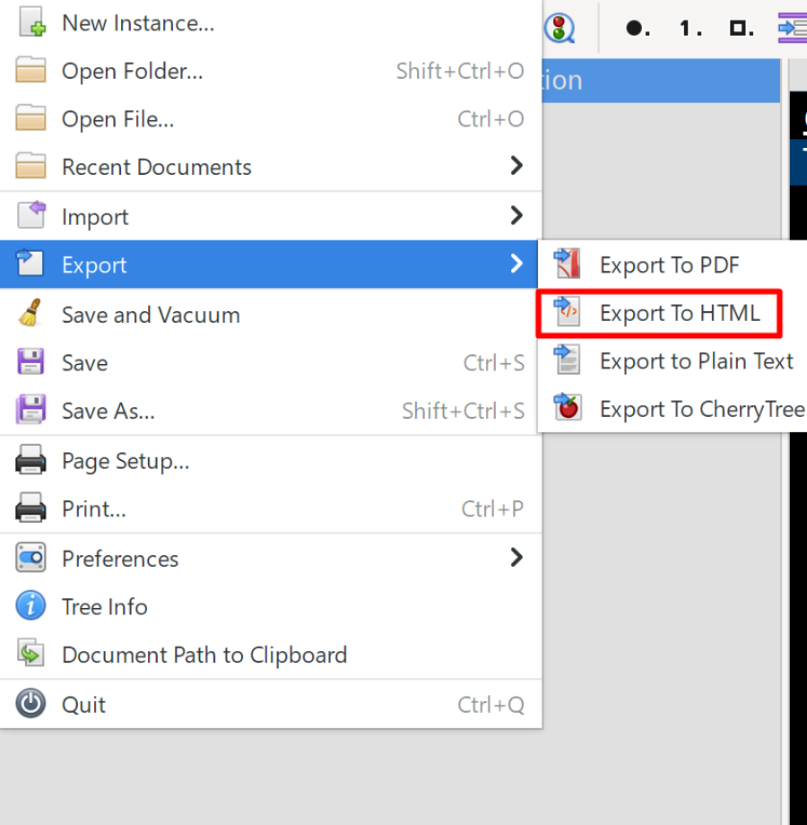
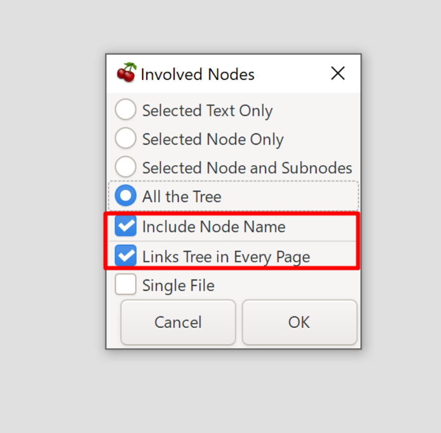

A web interface upgrade for cherrytree notes providing an upgrade to the default website interface given by cherrytree when using the "Export as HTML" function. This interface remains fully client side. It provides full image and text search (with cache files) across all pages, makes the interface mobile friendly, adds a dark theme, and much more. Now you can view your notes anywhere on any device if you use GitHub Pages for hosting and combine it with Github repos to easily update website note files (set as a private repo). There are ways to reduce your websites visibility online, see: Hosting Your Notes Using Github Pages.
Features
Latest Version Download: https://github.com/coregtree/cherrytree-notes-web-interface/releases
GitHub Repo: https://github.com/coregtree/cherrytree-notes-web-interface
Basic Setup
1: Export your notes to HTML using these export settings:

These export settings are a requirement:

2: Open the exported HTML notes folder and copy the “master.css” and “master-script.js” files into the “res” folder.
3: Right click -> edit the “script3.js” file and add the following code to the top of the file:
var script = document.createElement('script');
script.src = './res/master-script.js';
document.head.appendChild(script);
4: Right click -> edit the “styles4.css” file and add the following code in the “General” section of the file:
@import url("./master.css");
5: Next you should start a temporary local web server for your website files, as cache generation can fail with static website hosts due to throttling. Once you have your local web server running you will need to generate and download the page structure and image structure cache files by clicking "Download Search Cache Files". This will generate a cached structure of the HTML files, prompting a download for "page-structure-cache.json", and then scan the text inside every image and promt a download for "image-text-cache.json". MAKE SURE TO ALLOW MULTIPLE DOWNLOADS FOR THE SITE IN YOUR BROWSER. Then upload both of these cache files to the sites main root folder. Remember to generate and upload new cache files when updating a site with new notes otherwise the search function will break from using a stale cache!
Note: If your cache generation ends without scanning all your images and providing both a “page-structure-cache.json” and a “image-text cache.json” file then your website host is throttling your page and file requests. In this case you should start a local web server temporarily to generate your cache files locally and then upload them to your sites root folder. This has been tested and can be done easily with an extenstion like “Live Server” in VS Code.
6: Now you will need to host the HTML files using static website hosting or just run a local web server. See the hosting guide using GitHub Pages for free hosting and how to reduce your sites visibility online here: Hosting Your Notes Using Github Pages.